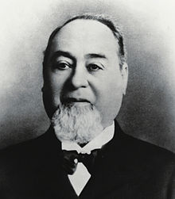

Levi Strauss ( February 26, 1829 – September 26, 1902) was an American Jewish businessman of German origin who founded the first company to manufacture blue jeans. His firm, Levi Strauss & Co., began in 1853 in San Francisco, California.
Levi Strauss was born in Buttenheim, Germany, on February 26, 1829, in the Franconian region of Bavaria, Germany, to an Ashkenazi Jewish family. He was the son of Hirsch Strauss and his second wife Rebecca Strauss.At the age of 18, Strauss, his mother and two sisters traveled to the United States to join his brothers Jonas and Louis, who had begun a wholesale dry goods business in New York City called J. Strauss Brother & Co.
Levi's sister Fanny and her husband David Stern moved to St. Louis, Missouri, while Levi went to live in Louisville, Kentucky, and sold his brothers' supplies in Kentucky. In January 1853, Levi Strauss became an American citizen.
The family decided to open a West Coast branch of the family dry goods business in San Francisco, which was the commercial hub of the California Gold Rush. Levi was chosen to represent the family and he took a steamship for San Francisco, arriving in early March 1853, where he joined his sister's family.
Strauss opened his dry goods wholesale business as Levi Strauss & Co. and imported fine dry goods—clothing, bedding, combs, purses, handkerchiefs—from his brothers in New York. He made tents, and later jeans. Levi lived with Fanny's growing family.
Jacob Davis, one of Strauss's customers and one of the inventors of riveted denim pants in 1871, went into business with Strauss to produce blue jeans. The two men patented the new style of work pants in 1873.
Levi Strauss died on September 26, 1902, in San Francisco at the age of 73. He never married, and left the business to his four nephews, Jacob, Sigmund, Louis, and Abraham Stern, the sons of his sister Fanny and her husband David Stern. He also left bequests to a number of charities, such as the Pacific Hebrew Orphan Asylum and the Roman Catholic Orphan Asylum. Before his death, he had also established scholarships at the University of California Berkeley (Levi Strauss Scholarships). Levi's fortune was estimated to be around $6 million (about $164 million in 2014 dollars). He was buried in Colma, California.
The Levi Strauss museum in Buttenheim, Germany, is located in the 1687 house where Strauss was born. There is also a Visitors Center at Levi Strauss & Co. headquarters in San Francisco, which features historical exhibits. The Levi Strauss Foundation started with an 1897 donation to the University of California, Berkeley.